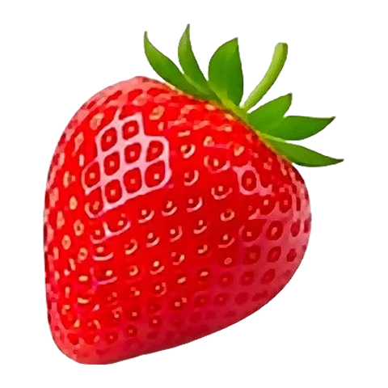
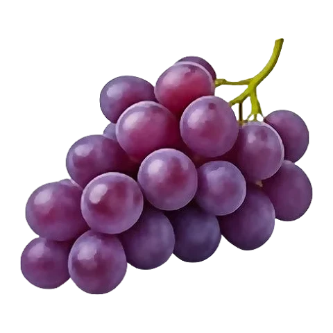
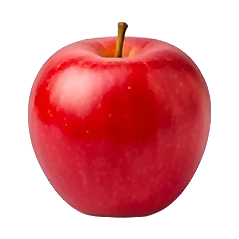
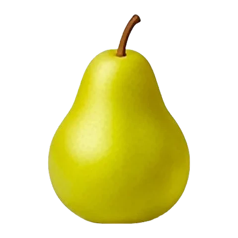
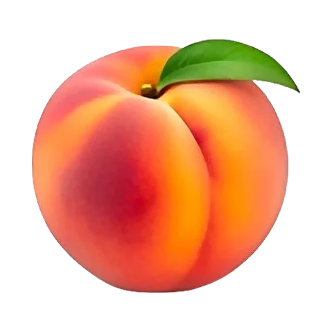
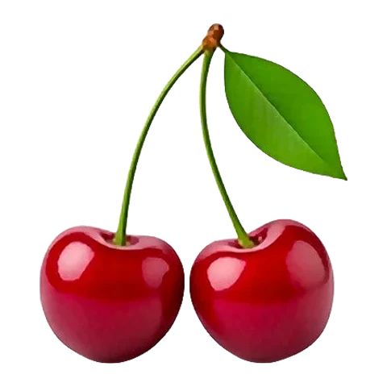
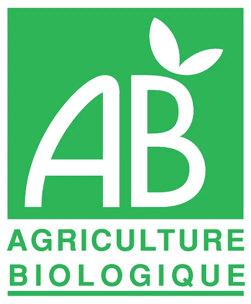
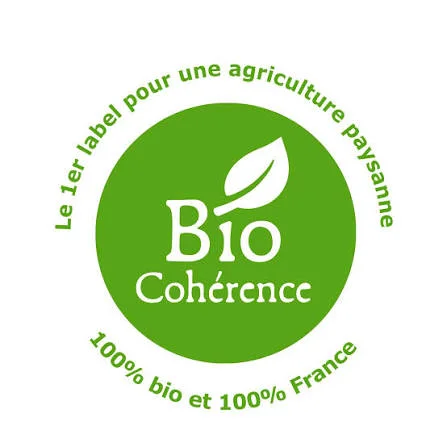
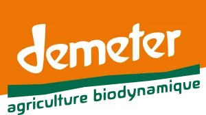
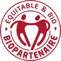

Bien choisir le bio
C’est quoi, le bio ?
Faut-il tout acheter bio ? Non. Voici les fruits et légumes où le bio fait vraiment la différence, comment le payer moins cher, et les labels à reconnaître en rayon.
Un fruit ou un légume bio a poussé sans pesticides chimiques ni engrais de synthèse. Tu le reconnais grâce au logo vert AB ou à la petite feuille étoilée européenne.
Bio ou pas bio ? Là où ça compte le plus
Pas besoin de tout acheter bio. Les fruits à peau fine, mangés avec la peau, sont les plus traités ; ceux protégés par une peau épaisse ou cultivés avec peu de traitements le sont beaucoup moins.
Plutôt en bio

Fraise
Raisin
Pomme
Poire
Pêche
Cerise- Céleri
- Salade
- Herbes fraîches
Peau fine, mangés entiers, souvent traités plusieurs fois dans la saison.
Le conventionnel suffit souvent
Peau épaisse qu’on retire, ou cultures peu traitées : on y retrouve rarement des résidus.
Acheter bio sans se ruiner
Cinq habitudes simples pour manger bio à petit budget.
- De saison En pleine saison, le bio est abondant et son prix se rapproche du conventionnel. Voir le calendrier →
- Au marché Les producteurs bio y vendent sans intermédiaire. En fin de marché, on négocie souvent les invendus. Trouver un marché →
- En vrac Fruits secs, légumineuses, céréales : sans emballage, on paie moins et on achète la juste quantité.
- En panier AMAP Un abonnement chez un maraîcher du coin : un panier bio chaque semaine, à prix fixe toute l’année.
- À la ferme La vente directe évite les marges : chaque fiche fruit ou légume liste les producteurs proches de chez vous.
Bio, local, de saison : quelle différence ?
Trois promesses différentes, qui se complètent. L’idéal : les trois à la fois.
Les certifications bio
En magasin, plusieurs logos cohabitent. Tous garantissent une agriculture sans pesticides ni engrais chimiques de synthèse, mais certains vont plus loin sur l’origine, l’équité ou les pratiques agricoles.
-

AB — Agriculture Biologique Logo français Le label bio le plus connu en France. Il garantit au moins 95 % d’ingrédients bio, sans pesticides chimiques de synthèse ni OGM. Il suit les mêmes règles que le logo européen. - Eurofeuille Logo bio européen Obligatoire sur tous les produits bio emballés vendus dans l’Union européenne. Il porte le code de l’organisme certificateur et l’origine des matières premières (UE, non-UE).
-

Bio Cohérence Label associatif français Va plus loin que le règlement européen : 100 % d’ingrédients bio, fermes entièrement en bio, origine France privilégiée et exigences sociales. - Nature & Progrès Mention associative Créée en 1964, pionnière du bio. Cahier des charges plus strict que l’AB, contrôlé par les producteurs et les consommateurs eux-mêmes (système participatif).
-

Demeter Label de biodynamie Agriculture biodynamique : ferme pensée comme un organisme vivant, préparations naturelles, respect des rythmes lunaires. Exige d’abord la certification bio. -
 Bio Équitable en France
Label bio et équitable
Filières bio françaises avec un prix juste garanti aux producteurs, des contrats sur plusieurs années et une gouvernance partagée.
Bio Équitable en France
Label bio et équitable
Filières bio françaises avec un prix juste garanti aux producteurs, des contrats sur plusieurs années et une gouvernance partagée.
-

Biopartenaire Label bio et équitable Associe bio et commerce équitable, en France comme à l’international : juste rémunération des producteurs et relations commerciales durables.
Les astuces de l’agriculteur bio
Sans produits chimiques, comment protéger ses fruits et ses légumes ? Avec la nature !
- Les coccinelles Au lieu de produits chimiques, l’agriculteur bio invite des coccinelles : une seule peut manger des dizaines de pucerons par jour !
- Le compost Les épluchures et le fumier deviennent un engrais naturel. Les vers de terre adorent ça et rendent la terre vivante.
- Changer de place Chaque année, les légumes changent de coin du champ. Comme ça, les petites bêtes qui les aiment ne les retrouvent pas.
- La paille au pied Pour empêcher les mauvaises herbes de pousser, on met de la paille autour des plantes ou on les arrache à la main.
Joue au détective au magasin
Pendant les courses, cherche ces deux logos sur les étiquettes. Combien de produits bio vas-tu trouver ?
Vrai ou faux ?
Cinq idées reçues sur le bio. Cliquez pour découvrir la réponse.
Devine la réponse, puis clique pour vérifier !